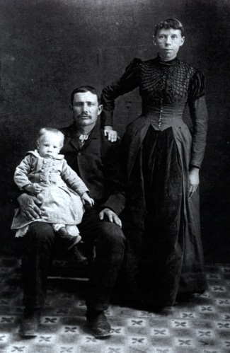
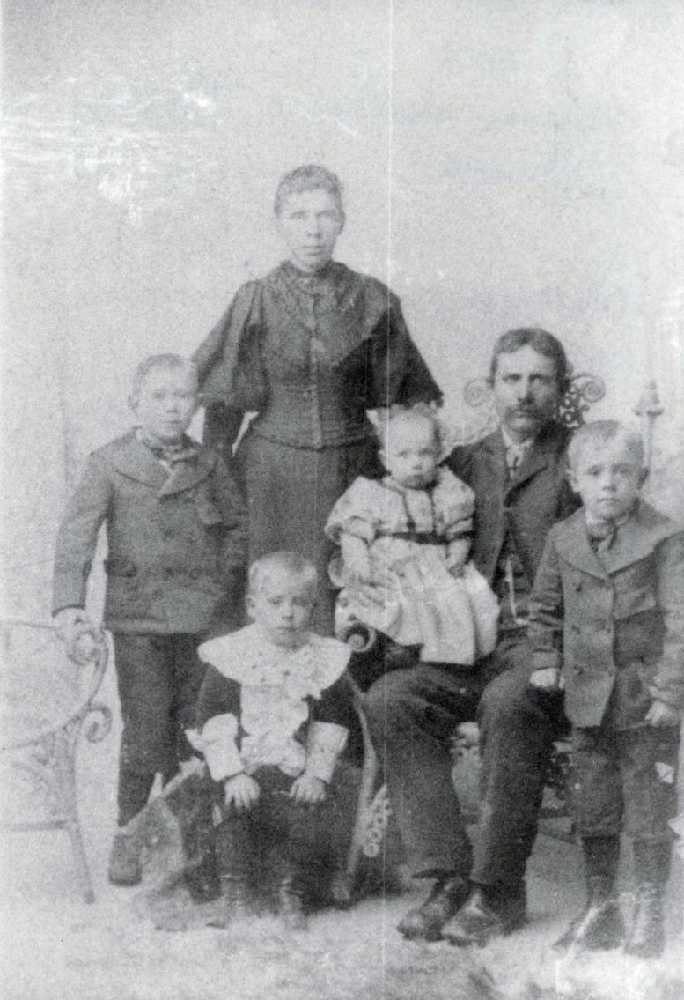
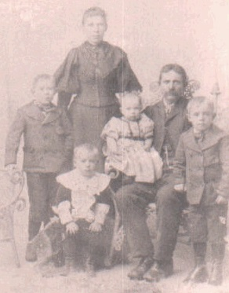

 John William Morgan was born 20 November 1862, in Fountain Green, Utah. He was the son of Thomas Morgan and Fannie Vizzard. He was the fourth child of a family of eight. There were two girls and five boys. He was baptized on 4 January 1878 in Fountain Green, Utah. As a boy he took care of the town's herd of milk cows. There were no fences, so the cows would stray, nd the Indians would steal them. One time he was drinking in a stream when he looked up. A big Indian stood there watching. He got up and ran, but the Indian just walked away. His father owned a lot of sheep. He would have to help take care of them as well as help with chores and farming. Daddy wasn't a very large man and always wore a moustache.
When the President of the church, Brigham Young, sent families to Colorado, raw country, as missionaries to build and settle, daddy rode horseback to scout for Indians. Many were sighted, but they were not bothered much by them. He also drove the cattle herd. They had a hard time crossing the Platte River. It was a long, hard trek, but their faith kept them going. When Daddy would get tired, he would often get into the wagon with my mother, Sena Jensen, and drive the team. It was a long journey, but they finally arrived in the San Louis Valley about the year 1882. While there, he stayed at his brother George Morgan's home. Daddy made several trips back to Utah.
 He decided to settle down and married his childhood sweetheart, my mother Sena Jenson, about 1886/1887. They lived in Richfield for a while. My oldest brother was born there but died as a baby. The water seemed to be a problem, so they all moved to Sanford, where he bought some land nd built a log home. They made a trip back to Utah in 1890 and went through the Manti Temple having all the children sealed to them. He continued to farm and live in the log house, until they moved into Grandmother Jensen's home to take care of her. Daddy and Mama had nine children losing a boy and a girl, nine years old. Daddy loved to dance, nd was a caller for the square dancers. We often danced this together. Daddy was a deeply religious man. We often would turn our chairs around and had family prayer. He and Mama bought a pair of glasses for $21.00 together. They both used them. They bought them at a drug store, I believe. He read the scriptures almost every day. He was a High Priest in the Melchezidek Priesthood. Sundays, when I was older, I would have to trim his moustache, and with a straight razor shave the back of his neck, using one of these was not fun.
Daddy was a janitor at the Tivoli Theater, and also the schools for a number of years. Later, he was the water master for the north part of town. What fun it was as a child, I would go with him by horse and wagon up to the head of the Conejos River to check on water, etc. He taught me the names of many flowers, birds and edible weeds. He also made me a whistle out of a willow. Daddy and I would get mushrooms, fry them and eat them. Anything Daddy ate, I liked too.
 Daddy was always helping the widows cutting wood or doing things to make it easier for them. He was a very compassionate father. One day as he was preparing to go to La Jara, a neighbor friend thought he'd play a joke, asking him to go to the lumber yard and bring him back fifty post holes. Daddy said he'd be glad to, so he went to the lumber yard and had them make out a bill for fifty post holes. All had a good laugh. He who laughs last laughs best.
As a child, I would sit in his lap at night. He would rock and sing me to sleep. How we both enjoyed it. The song Daddy always sang me was Old Dan Tucker. At the beginning of winter, several wagons would go to the mountains for winter wood. Mama would prepare a big chuck box for them. After being gone for several days, they would come home walking by the side of the wagons, and cold as blue blazes. What fun it was to play on the big logs and gather the rosin for gum.
Daddy took it hard when my mother passed away. It was very lonely for him. Four months later, he passed away at his oldest son's home with pnuemonia on 30 Nov 1928, at 64 years of age. Daddy worked hard. They were true pioneers to settle in a raw country of sage brush nd grass. He worked hard all his life raising a family. He loved them dearly and I truly loved my dad.